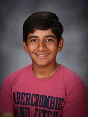

My name is Shaan Mathur and I currently
am a sophomore at Dublin High School. Outside of school, I am a competitive
golfer, studying machine learning, and a powerlifter. A few of my current short term goals are to lower
my handicap to single digits, to get quicker/more proficient at coding,
and to enjoy high school as much as possible. My main
career goal is to create my own machine learning or artificial intelligence related business after college.
To achieve this massive goal I plan to learn coding
and engineering, and then expand more into finance. Both of my parents are
in finance and I have always found it fascinating so I would love to
couple that with technology and have my own business.
I was born in India but moved to Memphis,
Tennessee at the age of four. I lived there for 2 years and then moved
to Glendale, Arizona for another 2 years. After that, I stayed in New
Jersey for a few months and then finally came to California. All of this
travelling helped me develop great social skills and taught me how to
make friends as I was always "the new kid at school". I also am very
diplomatic due my years of speech and debate experience. If I am working
with others, rather than argue, I try to sort things out fairly and calmly.
These qualities make me a natural leader who is responsible and reliable.
In addition, playing golf for several years has taught me to be a honest
and sincere person that does not lie or try to deceive anyone. Additionally,
this year I have been doing a lot of group projects in my Honors Principles of Engineering
class like the Mechanical Winch Project or Project Compound and I am almost always group leader.
A few of my best academic achievements are getting
all A's every quarter throughout all of middle school and so far throughout high school, even in classes like Honors Principles of Engineering, AP European Histroy, and Honors Chemistry. Outside of school, my best
Golf related achievements are getting 4th in a JGANC tournament and US Kids tournament, shooting
79 at Redwood Canyon Golf Course, and shooting 77 at Las Positas Golf Course.
Also, I have won 1st place for the Interpretation event twice at Monte Vista
High School. Some more info about me is that I am an
only child and I have a Labrador mix named Blaze (who I absolutely adore).
Also, I love to travel, eat great food, and hang out with my friends
and family. I hope you enjoyed learning about me and feel free to check
out the rest of my website to see more of my work, achievements, and
aspirations!